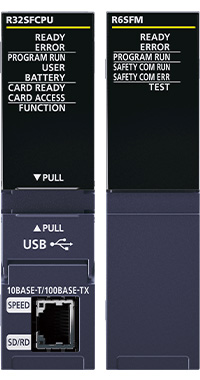
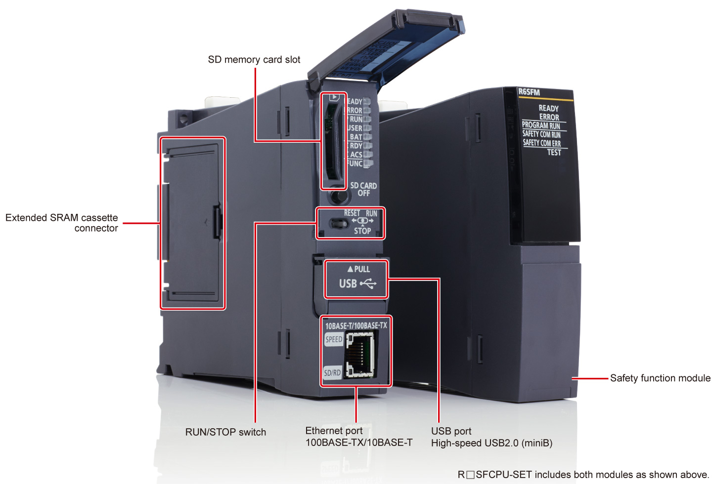
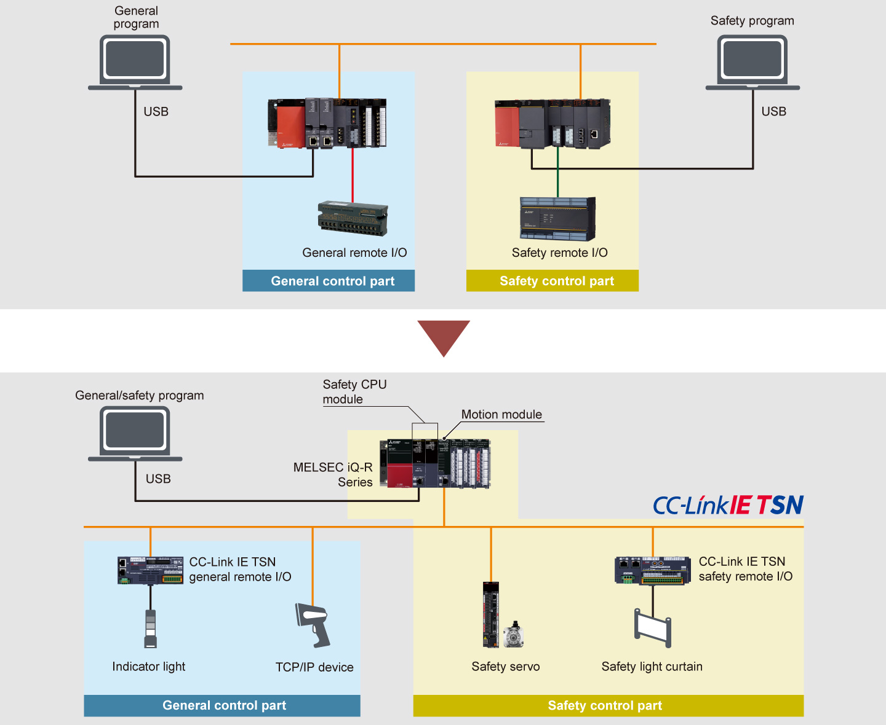
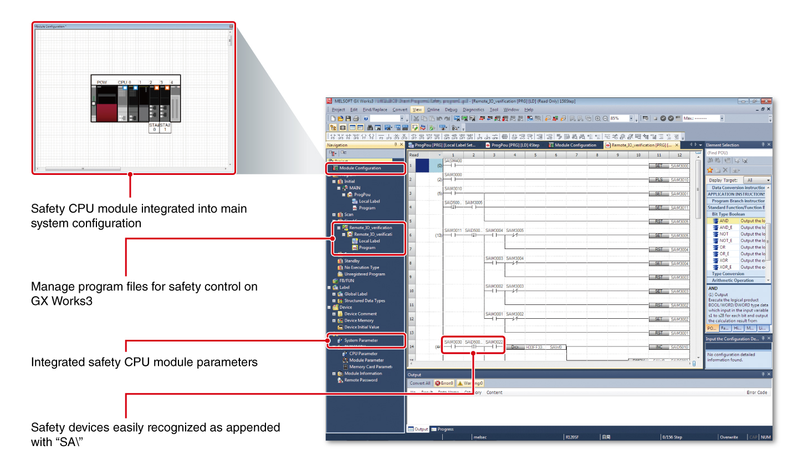

Controllers MELSEC iQ-R Series Product features -CPU-

Safety CPU module
The safety CPU module that is compliant with internationally recognized safety standards enables both general control and safety control which can safely stop a machine. In cooperation with safety drives, a system ensuring safety while avoiding frequent mechanical stops can be configured.
ISO 13849-1 PL eIEC 61508 SIL 3

R08SFCPU-SET80K*1
R16SFCPU-SET160K*1
R32SFCPU-SET320K*1
R120SFCPU-SET1200K*1
- *1.The program capacity of the safety control is 40K steps.
Interface

Features<sup>Safety and general control in one CPU module</sup>
- One system
- Space-saving
- Cost reduction
- Using the safety CPU module on CC-Link IE TSN or CC-Link IE Field Network can execute both general and safety programs, enabling easy integration into one control system
- Installation of separate programmable controllers and networks is unnecessary, saving on space and costs

General and safety programs in the common engineering platform
- Integrated program
- In engineering software GX Works3, general programs and safety programs are included in the same project folder
- The need to manage multiple project folders is eliminated

Specifications
Safety CPU module specifications
LD : Ladder diagramST : Structured textFBD : Function block diagramSFC : Sequential function chart
| Item | R08SFCPU-SET*2 | R16SFCPU-SET*2 | R32SFCPU-SET*2 | R120SFCPU-SET*2 |
|---|---|---|---|---|
| Safety integrity level (SIL) | SIL 3 (IEC 61508) | |||
| Performance level (PL) | PL e (EN/ISO 13849-1) | |||
| Operation control method | Stored program cyclic operation | |||
| I/O control mode | Refresh mode (Direct access I/O is available by specifying direct access I/O (DX, DY)) | |||
| Programming language | LDST*3FBD*3SFC |
|||
| Extended programming language | Function block (FB), label programming (local/global) | |||
| Program execution type | Fixed scan, initial*3, scan*3, event execution*3, standby*3 | |||
| Memory capacity | ||||
| Program capacity (step) | 80K (40K for safety programs)*4 | 160K (40K for safety programs)*4 | 320K (40K for safety programs)*4 | 1200K (40K for safety programs)*4 |
| Program memory (byte) | 320K | 640K | 1280K | 4800K |
| Device/label memory*5 (byte) | 1178K | 1710K | 2306K | 3370K |
| Data memory (byte) | 5M | 10M | 20M | 40M |
| Function | ||||
| SLMP communication | ● | ● | ● | ● |
| Simple CPU communication*6*7 | ● | ● | ● | ● |
- *2.Product package includes a safety CPU module (R□SFCPU) and safety function module (R6SFM).
- *3.Cannot be used for safety control programs.
- *4.Up to 40K steps of the program capacity can be used for safety programs.
- *5.An extended SRAM cassette expands the device/label memory area.
- *6.Simple CPU communication function is supported in the module firmware version of “30” or later.
- *7.Click here for details about the list of connectable devices supporting simple CPU communication function.